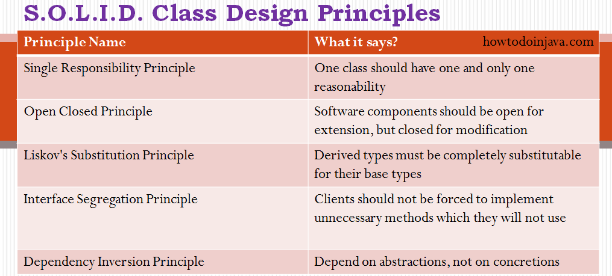

Classes are the building blocks of any java application. If these blocks are not strong, the building (i.e. application) is going to face the tough time in future. This essentially means that not so well-written can lead to very difficult situations when the application scope goes up or application faces certain design issues either in production or maintenance.

1. Introduction
In this tutorial, we’ll be discussing the SOLID principles of Object-Oriented Design.
First, we’ll start by exploring the reasons they came about and why we should consider them when designing software. Then, we’ll outline each principle alongside some example code to emphasize the point.
2. The Reason for SOLID Principles
The SOLID principles were first conceptualized by Robert C. Martin in his 2000 paper, Design Principles and Design Patterns. These concepts were later built upon by Michael Feathers, who introduced us to the SOLID acronym. And in the last 20 years, these 5 principles have revolutionized the world of object-oriented programming, changing the way that we write software.
So, what is SOLID and how does it help us write better code? Simply put, Martin’s and Feathers’ design principles encourage us to create more maintainable, understandable, and flexible software. Consequently, as our applications grow in size, we can reduce their complexity and save ourselves a lot of headaches further down the road!
The following 5 concepts make up our SOLID principles:
- Single Responsibility
- Open/Closed
- Liskov Substitution
- Interface Segregation
- Dependency Inversion
While some of these words may sound daunting, they can be easily understood with some simple code examples. In the following sections, we’ll take a deep dive into what each of these principles means, along with a quick Java example to illustrate each one.
3. Single Responsibility
Let’s kick things off with the single responsibility principle. As we might expect, this principle states that a class should only have one responsibility. Furthermore, it should only have one reason to change.
How does this principle help us to build better software? Let’s see a few of its benefits:
- Testing – A class with one responsibility will have far fewer test cases
- Lower coupling – Less functionality in a single class will have fewer dependencies
- Organization – Smaller, well-organized classes are easier to search than monolithic ones
Take, for example, a class to represent a simple book:
1 2 3 4 5 6 7 8 | public class Book
{ private String name; private String author; private String text; //constructor, getters and
setters} |
In this code, we store the name, author, and text associated with an instance of a Book.
Let’s now add a couple of methods to query the text:
1 2 3 4 5 6 7 8 9 10 11 12 13 14 15 16 17 | public
class Book { private String name; private String author; private String text; //constructor, getters and
setters // methods that directly
relate to the book properties public String replaceWordInText(String word){ return text.replaceAll(word, text); } public boolean isWordInText(String
word){ return text.contains(word); }} |
Now, our Book class works well, and we can store as many books as we like in our application. But, what good is storing the information if we can’t output the text to our console and read it?
Let’s throw caution to the wind and add a print method:
1 2 3 4 5 6 7 | public class Book
{ //... void printTextToConsole(){ // our code for formatting and
printing the text }} |
This code does, however, violate the single responsibility principle we outlined earlier. To fix our mess, we should implement a separate class that is concerned only with printing our texts:
1 2 3 4 5 6 7 8 9 10 11 | public
class BookPrinter { // methods for outputting text void printTextToConsole(String text){ //our code for formatting and
printing the text } void printTextToAnotherMedium(String text){ // code for writing to any
other location.. }} |
Awesome. Not only have we developed a class that relieves the Book of its printing duties, but we can also leverage our BookPrinter class to send our text to other media.
Whether it’s email, logging, or anything else, we have a separate class dedicated to this one concern.
4. Open for Extension, Closed for Modification
Now, time for the ‘O’ – more formally known as the open-closed principle. Simply put, classes should be open for extension, but closed for modification. In doing so, we stop ourselves from modifying existing code and causing potential new bugs in an otherwise happy application.
Of course, the one exception to the rule is when fixing bugs in existing code.
Let’s explore the concept further with a quick code example. As part of a new project, imagine we’ve implemented a Guitar class.
It’s fully fledged and even has a volume knob:
1 2 3 4 5 6 7 8 | public class Guitar
{ private String make; private String model; private int volume; //Constructors, getters &
setters} |
We launch the application, and everyone loves it. However, after a few months, we decide the Guitar is a little bit boring and could do with an awesome flame pattern to make it look a bit more ‘rock and roll’.
At this point, it might be tempting to just open up the Guitar class and add a flame pattern – but who knows what errors that might throw up in our application.
Instead, let’s stick to the open-closed principle and simply extend our Guitar class:
1 2 3 4 5 6 | public
class SuperCoolGuitarWithFlames extends Guitar { private String flameColor; //constructor, getters +
setters} |
By extending the Guitar class we can be sure that our existing application won’t be affected.
5. Liskov Substitution
Next up on our list is Liskov substitution, which is arguably the most complex of the 5 principles. Simply put, if class A is a subtype of class B, then we should be able to replace B with A without disrupting the behavior of our program.
Let’s just jump straight to the code to help wrap our heads around this concept:
1 2 3 4 5 | public
interface Car { void turnOnEngine(); void accelerate();} |
Above, we define a simple Car interface with a couple of methods that all cars should be able to fulfill – turning on the engine, and accelerating forward.
Let’s implement our interface and provide some code for the methods:
1 2 3 4 5 6 7 8 9 10 11 12 13 14 15 16 | public
class MotorCar implements Car
{ private Engine engine; //Constructors, getters +
setters public void turnOnEngine()
{ //turn on the engine! engine.on(); } public void accelerate()
{ //move forward! engine.powerOn(1000); }} |
As our code describes, we have an engine that we can turn on, and we can increase the power. But wait, its 2019, and Elon Musk has been a busy man.
We are now living in the era of electric cars:
1 2 3 4 5 6 7 8 9 10 | public
class ElectricCar implements Car { public void turnOnEngine()
{ throw new AssertionError("I don't have an engine!"); } public void accelerate()
{ //this acceleration is crazy! }} |
By throwing a car without an engine into the mix, we are inherently changing the behavior of our program. This is a blatant violation of Liskov substitution and is a bit harder to fix than our previous 2 principles.
One possible solution would be to rework our model into interfaces that take into account the engine-less state of our Car.
6. Interface Segregation
The ‘I ‘ in SOLID stands for interface segregation, and it simply means that larger interfaces should be split into smaller ones. By doing so, we can ensure that implementing classes only need to be concerned about the methods that are of interest to them.
For this example, we’re going to try our hands as zookeepers. And more specifically, we’ll be working in the bear enclosure.
Let’s start with an interface that outlines our roles as a bear keeper:
1 2 3 4 5 | public
interface BearKeeper { void washTheBear(); void feedTheBear(); void petTheBear();} |
As avid zookeepers, we’re more than happy to wash and feed our beloved bears. However, we’re all too aware of the dangers of petting them. Unfortunately, our interface is rather large, and we have no choice than to implement the code to pet the bear.
Let’s fix this by splitting our large interface into 3 separate ones:
1 2 3 4 5 6 7 8 9 10 11 | public
interface BearCleaner { void washTheBear();}public interface
BearFeeder { void feedTheBear();}public interface
BearPetter { void petTheBear();} |
Now, thanks to interface segregation, we’re free to implement only the methods that matter to us:
1 2 3 4 5 6 7 8 9 10 | public
class BearCarer implements BearCleaner, BearFeeder { public void washTheBear()
{ //I think we missed a spot... } public void feedTheBear()
{ //Tuna Tuesdays... }} |
And finally, we can leave the dangerous stuff to the crazy people:
1 2 3 4 5 6 | public
class CrazyPerson implements BearPetter { public void petTheBear()
{ //Good luck with that! }} |
Going further, we could even split our BookPrinter class from our example earlier to use interface segregation in the same way. By implementing a Printer interface with a single print method, we could instantiate separate ConsoleBookPrinter and OtherMediaBookPrinter classes.
7. Dependency Inversion
The principle of Dependency Inversion refers to the decoupling of software modules. This way, instead of high-level modules depending on low-level modules, both will depend on abstractions.
To demonstrate this, let’s go old-school and bring to life a Windows 98 computer with code:
1 | public
class Windows98Machine {} |
But what good is a computer without a monitor and keyboard? Let’s add one of each to our constructor so that every Windows98Computer we instantiate comes pre-packed with a Monitor and a StandardKeyboard:
1 2 3 4 5 6 7 8 9 10 11 | public
class Windows98Machine { private final StandardKeyboard keyboard; private final Monitor monitor; public Windows98Machine() { monitor = new Monitor(); keyboard = new StandardKeyboard(); }} |
This code will work, and we’ll be able to use the StandardKeyboard and Monitor freely within our Windows98Computer class. Problem solved? Not quite. By declaring the StandardKeyboard and Monitor with the new keyword, we’ve tightly coupled these 3 classes together.
Not only does this make our Windows98Computer hard to test, but we’ve also lost the ability to switch out our StandardKeyboard class with a different one should the need arise. And we’re stuck with our Monitor class, too.
Let’s decouple our machine from the StandardKeyboard by adding a more general Keyboard interface and using this in our class:
1 | public
interface Keyboard { } |
1 2 3 4 5 6 7 8 9 10 | public
class Windows98Machine{ private final Keyboard keyboard; private final Monitor monitor; public Windows98Machine(Keyboard keyboard, Monitor
monitor) { this.keyboard = keyboard; this.monitor = monitor; }} |
Here, we’re using the dependency injection pattern here to facilitate adding the Keyboard dependency into the Windows98Machine class.
Let’s also modify our StandardKeyboard class to implement the Keyboard interface so that it’s suitable for injecting into the Windows98Machine class:
1 | public
class StandardKeyboard implements Keyboard { } |
Now our classes are decoupled and communicate through the Keyboard abstraction. If we want, we can easily switch out the type of keyboard in our machine with a different implementation of the interface. We can follow the same principle for the Monitor class.
Excellent! We’ve decoupled the dependencies and are free to test our Windows98Machine with whichever testing framework we choose.
8. Conclusion
In this tutorial, we’ve taken a deep dive into the SOLID principles of object-oriented design.
We started with a quick bit of SOLID history and the reasons these principles exist.
Letter by letter, we’ve broken down the meaning of each principle with a quick code example that violates it. We then saw how to fix our code and make it adhere to the SOLID principles.
As always, the code is available over on GitHub.